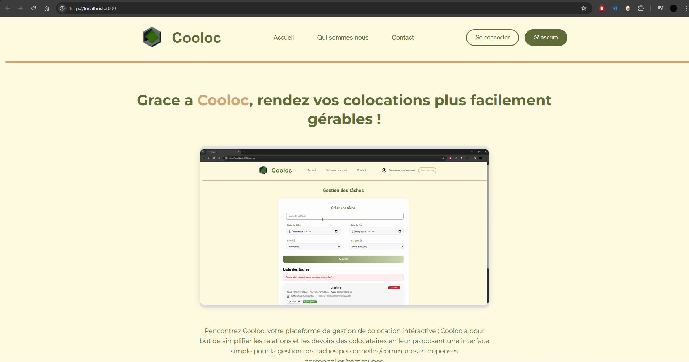
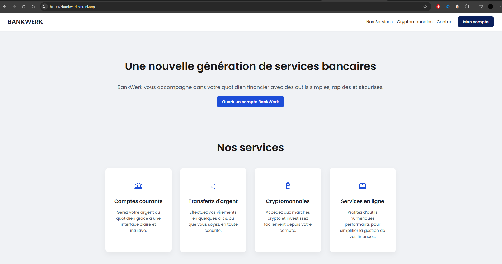
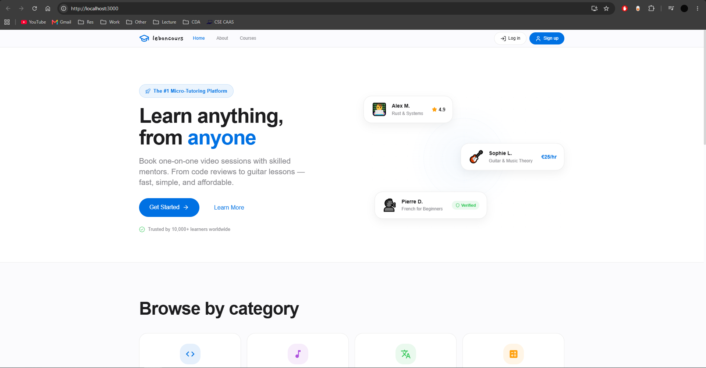
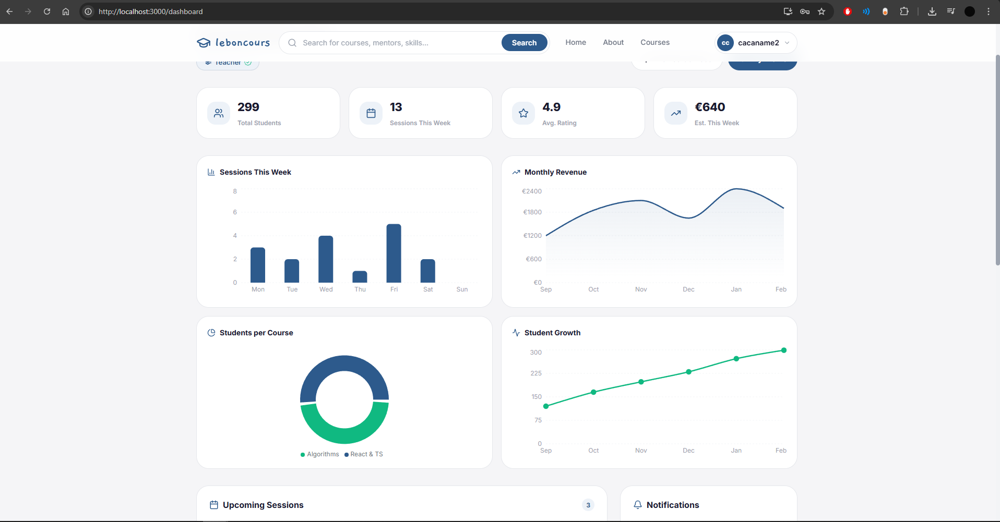
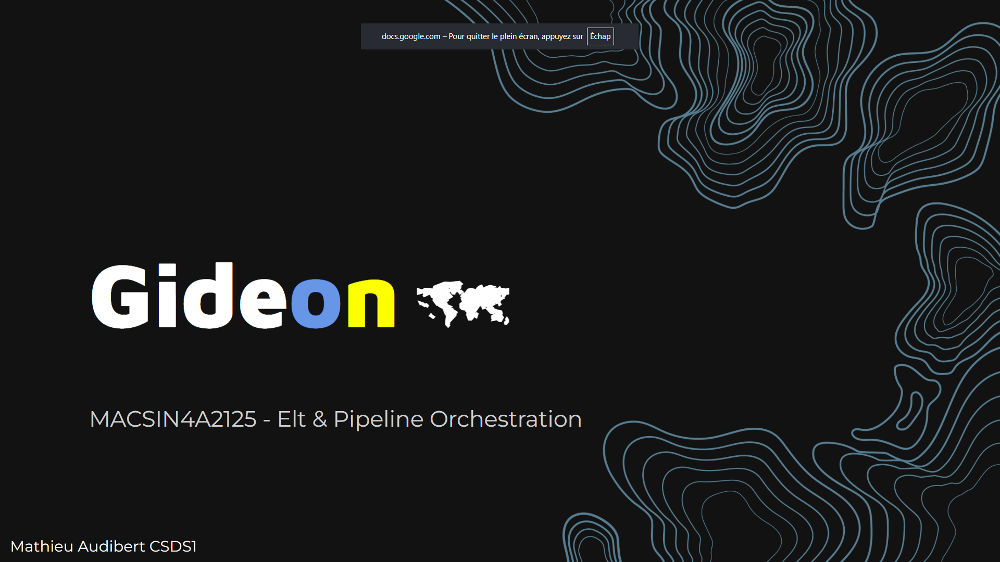
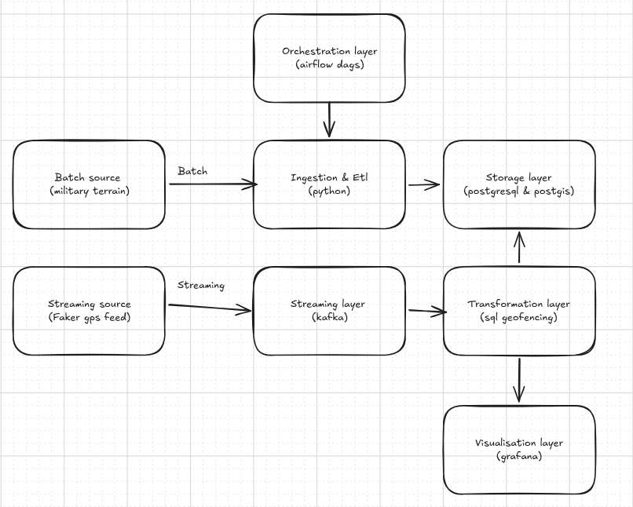

School
Early Education
My journey in computer science began in middle school with Scratch and robotics courses. In high school, I focused on Python while studying graph theory, data structures, networking, and algorithms.
Completed a 3-year "Development & Data" engineering bachelor's degree at Efrei Panthéon Assas, earning the RNCP37873 certification (Cooloc).
Efrei
Studied technical subjects including:
- Java & OOP (Spring Boot)
- JavaScript/Node.js
- PHP (Symfony, Composer)
- SQL & database management (MySQL, PostgreSQL, MongoDB)
- UML
- Web development (APIs, protocols)
- Source control (Git, GitHub, GitLab)
- Linux systems
- Frontend design (Figma, React)
- DevOps (SonarQube, GitHub Actions)
- Cybersecurity (OWASP, Bitwarden)
Alongside these: English, agile methodology, and project management.
Cooloc
About
Cooloc is a shared-housing management platform built to simplify colocation life. From organising bills to coordinating flatmates, it centralises everything a shared flat needs into one web application.

The certification required a complete conception and development lifecycle of a web application — from design through technical choices, code implementation, and security. The full documentation can be found in the backup/ directory.
Tech Stack
Backend
| Language | Python |
| HTTP Server | Standard library http.server — no framework, fully hand-rolled routing & request handling |
| Testing | tox |
Frontend
| Languages | JavaScript · CSS · HTML |
| Styling | Vanilla CSS |
DevOps & Quality
| Containerisation | Docker · docker-compose |
| CI/CD | GitHub Actions |
| Code Quality | SonarCloud (Bugs · Code Smells · Coverage) |
Languages breakdown: Python 47.1% · JavaScript 36.2% · CSS 15.1% · HTML 1.5% · Dockerfile 0.1%
Releases
| Version | Date |
|---|---|
| V1.0 (Latest) | July 2, 2025 |
BankWerk
About
BankWerk is a crypto-oriented banking platform built as a React deep-dive exercise. The goal was to practise state management, routing, and component architecture while building a realistic banking UI with live cryptocurrency price tracking.

Tech Stack
Frontend
| Framework | Next.js |
| Language | JavaScript (JSX) · CSS |
| Routing | Next.js App Router |
| Data | External crypto price API |
Languages breakdown: JavaScript 78.4% · CSS 21.6%
Team
| Name | GitHub |
|---|---|
| Mathieu Audibert | @MathieuAudibert |
| Romeo Agostino | @RomeoAg13 |
| Andrija Tomic | @AndrijaFF |
Releases
| Version | Date |
|---|---|
| V1.0 (Latest) | April 24, 2025 |
ESILV
Currently pursuing a Master of Engineering in Computer Science and Data Science at ESILV. Coursework includes:
- Python for data engineering (Pandas, FastAPI, Flask)
- Advanced networks
- Databases (Oracle, MongoDB, Neo4j, Elasticsearch)
- Containerization & DevOps (Kubernetes, Docker, GitHub Actions, JFrog, Terraform, Ansible)
- Digital Twins & IoT
- Advanced OOP (Java, Spring Boot)
- Web architecture (Rust, React, Bun, TypeScript)
- Cloud platforms (AWS, Google Cloud, Azure)
- Blockchain & digital trust
- Machine learning (scikit-learn)
- Data analysis (Polars, Jupyter)
- ETL pipelines (Apache Airflow, Kafka, Grafana, Spark, PostgreSQL)
Additionally: English courses and a scientific research paper in the 2nd year (see Upcoming section).
Leboncours
About
Leboncours is a Single Page Application that bridges casual learning and professional tutoring. Users sign up as Teachers or Students: teachers set their availability and offer courses, students browse and book sessions. The platform features an Admin role, an integrated messaging system, and a dashboard with charts.
It supports quick, one-off bookings for video call sessions on any skill — from code review to guitar tuning.


Tech Stack
Backend
| Language | Rust (Edition 2024) |
| Framework | Axum 0.7 |
| Async Runtime | Tokio |
| ORM | SeaORM 1.1 (PostgreSQL via sqlx) |
| API Docs | Utoipa + Swagger UI |
| Auth | Argon2 (password hashing) + JWT |
| Validation | validator · tower-http (CORS) |
Database
| System | PostgreSQL |
| Schema | Raw SQL (db/create_table.sql) |
Frontend
| Framework | React 19 |
| Language | JavaScript (JSX) |
| Routing | react-router-dom 7 |
| Data Grid | AG Grid React 35 |
| Charts | Recharts |
| Icons | Lucide React · React Icons |
| Auth State | React Context + sessionStorage |
Languages breakdown: JavaScript 40% · CSS 30% · Rust 29.5%
API Highlights
Base URL: http://127.0.0.1:3001 · Swagger UI at /swagger-ui
Full REST CRUD on: auth · users · courses · availabilities · event-courses · teacher-courses · messages · message-users
Gideon
About
Gideon is a military topology interactive map powered by a complete ETL + ELT + streaming pipeline. It ingests two open GeoJSON datasets from the Humanitarian Data Exchange — Ukraine Roads and Ukraine Points of Interest — into PostGIS, builds analytics tables, replays events through Kafka, and renders everything in a live Grafana dashboard.
Note: This project's purpose is solely to map the important geographic points of Ukraine.


Tech Stack
| Component | Technology |
|---|---|
| Orchestration | Apache Airflow |
| Streaming | Apache Kafka |
| Database | PostgreSQL + PostGIS |
| Monitoring | Grafana |
| Pipeline | Python (97.5%) |
| Containerisation | Docker / docker-compose |
Architecture
The pipeline follows a complete ETL → ELT → Streaming flow:
- Extract — raw GeoJSON data fetched from Humanitarian Data Exchange
- Load — ingested into PostGIS with spatial indexing
- Transform — SQL analytics tables built on top of raw data
- Stream — events replayed through Kafka topics
- Visualise — live Grafana dashboard served at
localhost:3000
Main orchestration DAG: src/orchestration/dags/raw_data_ingestion.py
Data Sources
| Dataset | Source |
|---|---|
| Ukraine Roads | HOTOSM via HDX |
| Ukraine Points of Interest | HOTOSM via HDX |